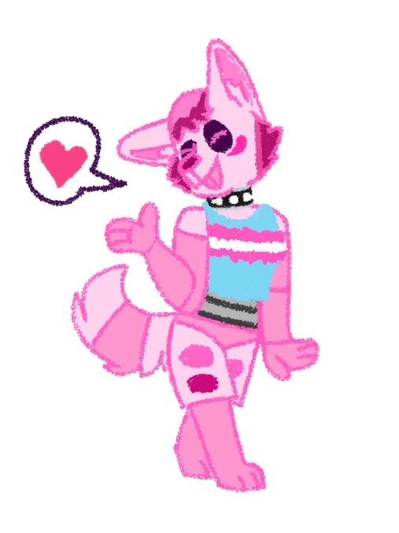

Hi, I'm Dania Rifki!
I'm a hobbyist programmer and artist from Jakarta, Indonesia.
You can see my artwork and programming projects by hovering over the sidebar and clicking their menu buttons.
This is my fursona D4-N14 or as she prefers to be called, Dania Ascii!
She's a robot fox that was made to be a male, but had female programming by accident, so she decided to transition to a female body.